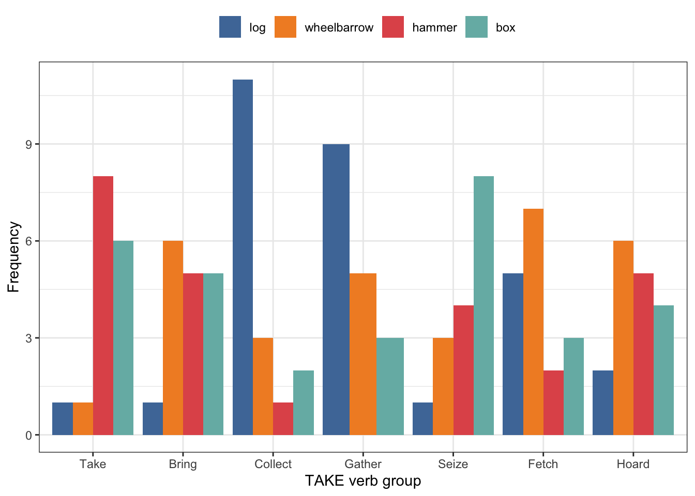
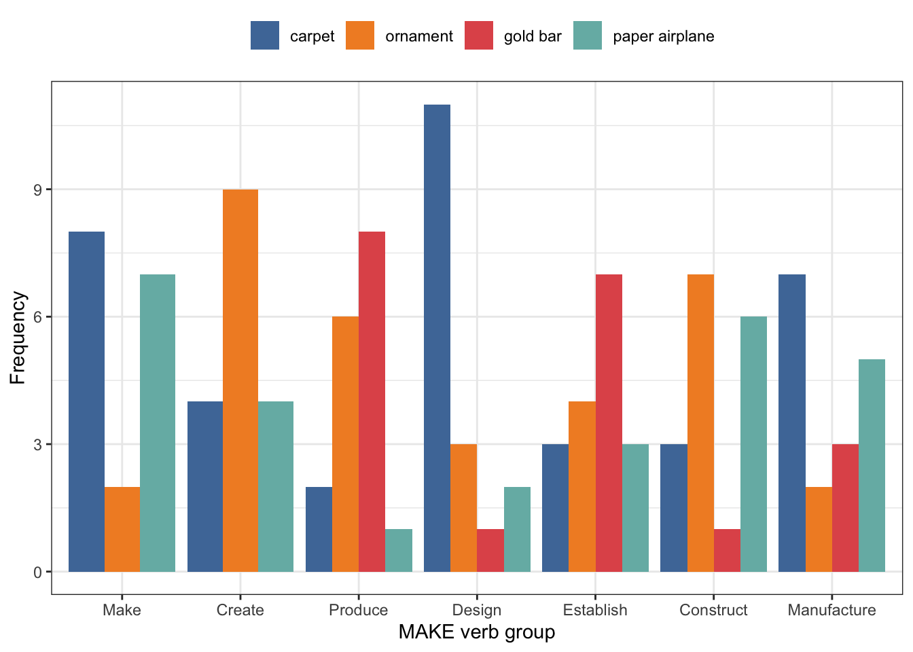
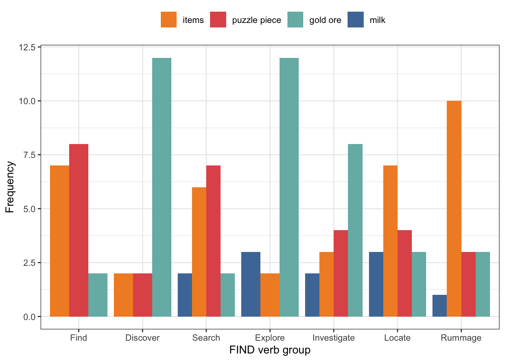
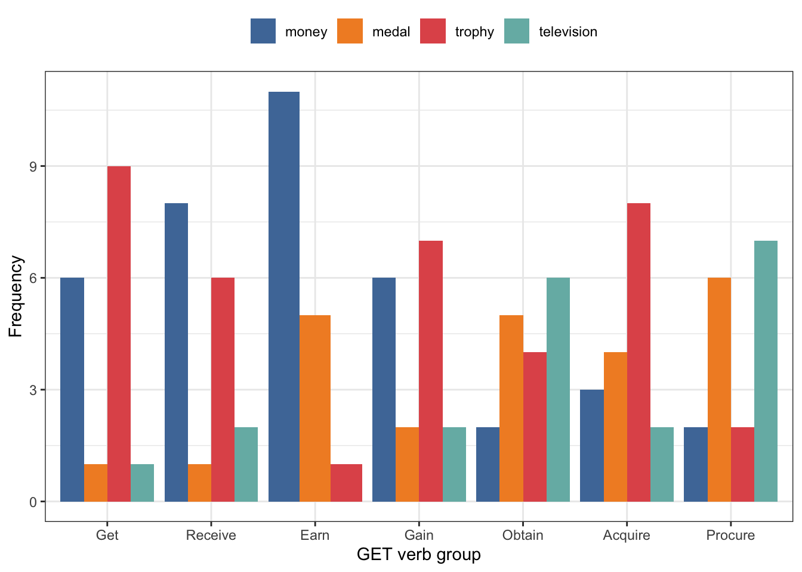
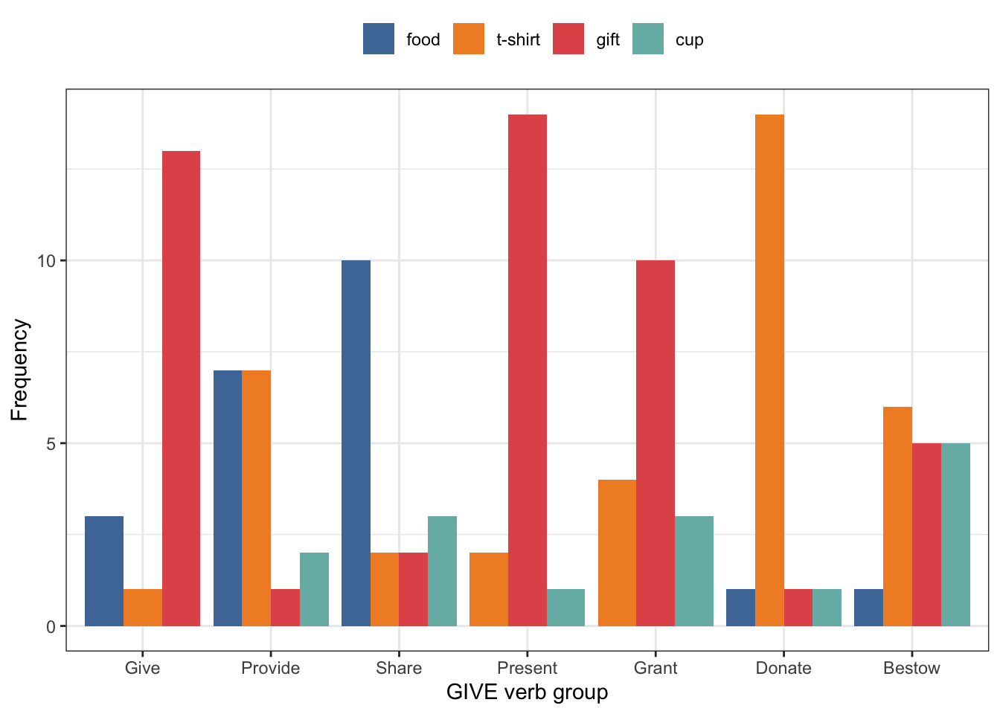

![]()
library(tidyverse)
library(readxl)
df_raw <- map2(.x = "data/data-raw.xlsx",
.y = 1:17,
~read_xlsx(path = .x, sheet = .y)) |>
map_df(bind_rows)
resp_count <- df_raw |>
filter(`Response Type` == "response") |>
select(`Participant Private ID`, Response, `Spreadsheet: Text`) |>
distinct() |>
count(`Participant Private ID`, Response, `Spreadsheet: Text`) |>
separate(`Spreadsheet: Text`,
into = c("eng_v", "idn_v"),
sep = "\\s\\=\\s",
remove = FALSE) |>
mutate(response_ID = str_replace_all(Response,
"(^[^0-9]+(?=\\d)|\\.jpe?g$)",
"")) |>
filter(Response != "0")
verb_group <- data.frame(idn_v = c("Memberi", "Membuat", "Mencari",
"Mendapatkan", "Mengambil"),
groups = c("E", "B", "C",
"D", "A"))
resp_count <- left_join(resp_count,
verb_group,
by = join_by(idn_v)) |>
mutate(response_ID = paste(groups, response_ID, sep = "")) |>
rename(participant_ID = `Participant Private ID`,
text_stimuli = `Spreadsheet: Text`,
response = Response)
resp_count |>
write_csv("data/data-main.csv")R notebook for “Do verbs have an inherent association to specific nouns than others? A preliminary experimental study”
1 Pre-processing
Preparing the main data from the raw data output of the Gorilla experiment.
2 Main data
Loading the count data for each participant.
library(tidyverse)
resp_count <- read_csv("data/data-main.csv")
nouns <- read_csv2("data/noun-codes.csv") |>
rename(response_ID = CODES)Getting the summarised responses across all participants.
resp_count2 <- resp_count |>
group_by(eng_v, groups, response_ID) |>
summarise(n = sum(n), .groups = "drop") |>
arrange(groups) |>
rename(freq = n) |>
left_join(nouns, by = join_by(response_ID))
resp_count2# A tibble: 130 × 6
eng_v groups response_ID freq NOUN COLS
<chr> <chr> <chr> <dbl> <chr> <chr>
1 Bring A A1 1 log #4E79A7
2 Bring A A2 6 wheelbarrow #F28E2B
3 Bring A A3 5 hammer #E15759
4 Bring A A4 5 box #76B7B2
5 Collect A A1 11 log #4E79A7
6 Collect A A2 3 wheelbarrow #F28E2B
7 Collect A A3 1 hammer #E15759
8 Collect A A4 2 box #76B7B2
9 Fetch A A1 5 log #4E79A7
10 Fetch A A2 7 wheelbarrow #F28E2B
# ℹ 120 more rows3 Visualisation of the results
3.1 TAKE group
Figure 1 shows the frequency of nouns with the TAKE verb group.
df <- resp_count2 |>
filter(groups == "A") |>
mutate(eng_v = fct_relevel(eng_v, c("Take", "Bring", "Collect", "Gather", "Seize", "Fetch", "Hoard")),
NOUN = fct_relevel(NOUN, c("log", "wheelbarrow", "hammer", "box")))
cols <- df$COLS
names(cols) <- df$NOUN
df |>
ggplot(aes(x = eng_v,
y = freq,
fill = NOUN)) +
geom_col(position = "dodge") +
scale_fill_manual(values = cols) +
theme_bw() +
theme(legend.position = "top") +
labs(y = "Frequency",
x = "TAKE verb group",
fill = "")
3.2 MAKE group
Figure 2 shows the frequency of nouns with the MAKE verb group.
df <- resp_count2 |>
filter(groups == "B") |>
mutate(eng_v = fct_relevel(eng_v, c("Make", "Create", "Produce", "Design", "Establish", "Construct", "Manufacture")),
NOUN = fct_relevel(NOUN, c("carpet", "ornament", "gold bar", "paper airplane")))
cols <- df$COLS
names(cols) <- df$NOUN
df |>
ggplot(aes(x = eng_v,
y = freq,
fill = NOUN)) +
geom_col(position = "dodge") +
scale_fill_manual(values = cols) +
theme_bw() +
theme(legend.position = "top") +
labs(y = "Frequency",
x = "MAKE verb group",
fill = "")
3.3 FIND group
Figure 3 shows the frequency of nouns with the FIND verb group.
df <- resp_count2 |>
filter(groups == "C") |>
mutate(eng_v = fct_relevel(eng_v, c("Find", "Discover", "Search", "Explore", "Investigate", "Locate", "Rummage")),
NOUN = fct_relevel(NOUN, c("milk", "items", "puzzle piece", "gold ore")))
cols <- df$COLS
names(cols) <- df$NOUN
df |>
filter(groups == "C") |>
ggplot(aes(x = eng_v,
y = freq,
fill = NOUN)) +
geom_col(position = "dodge") +
scale_fill_manual(values = cols) +
theme_bw() +
theme(legend.position = "top") +
labs(y = "Frequency",
x = "FIND verb group",
fill = "")
3.4 GET group
Figure 4 shows the frequency of nouns with the GET verb group.
df <- resp_count2 |>
filter(groups == "D") |>
mutate(eng_v = fct_relevel(eng_v, c("Get", "Receive", "Earn", "Gain", "Obtain", "Acquire", "Procure")),
NOUN = fct_relevel(NOUN, c("money", "medal", "trophy", "television")))
cols <- df$COLS
names(cols) <- df$NOUN
df |>
ggplot(aes(x = eng_v,
y = freq,
fill = NOUN)) +
geom_col(position = "dodge") +
scale_fill_manual(values = cols) +
theme_bw() +
theme(legend.position = "top") +
labs(y = "Frequency",
x = "GET verb group",
fill = "")
3.5 GIVE group
Figure 5 shows the frequency of nouns with the GIVE verb group.
df <- resp_count2 |>
filter(groups == "E") |>
mutate(eng_v = fct_relevel(eng_v, c("Give", "Provide", "Share", "Present", "Grant", "Donate", "Bestow")),
NOUN = fct_relevel(NOUN, c("food", "t-shirt", "gift", "cup")))
cols <- df$COLS
names(cols) <- df$NOUN
df |>
filter(groups == "E") |>
ggplot(aes(x = eng_v,
y = freq,
fill = NOUN)) +
geom_col(position = "dodge") +
scale_fill_manual(values = cols) +
theme_bw() +
theme(legend.position = "top") +
labs(y = "Frequency",
x = "GIVE verb group",
fill = "")